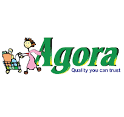

Some of our Awesome Partners


At PROGGA's GARDEN, we're dedicated to bringing you the freshest, healthiest foods and the finest organic materials for your garden. Our farm is a haven of sustainability, where every product is nurtured with care and respect for nature. Whether you're looking to enjoy farm-fresh produce or enrich your garden with our premium organic offerings, Progga's Garden is your trusted source for quality and purity. Join us in cultivating a healthier lifestyle and a greener planet, one harvest at a time.